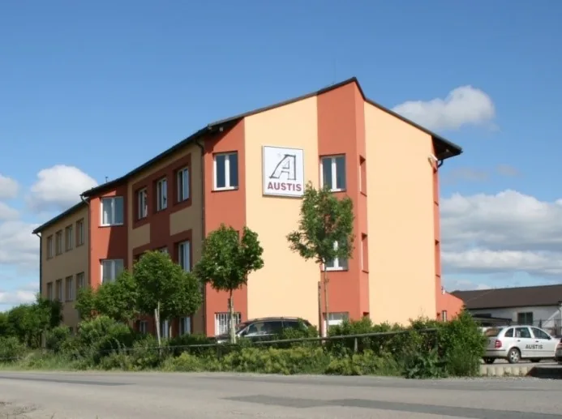

Probereme váš stavební záměr
Plánujete novostavbu nebo rekonstrukci? Spojte se s námi a domluvte si nezávaznou konzultaci. Pro první kontakt nám stačí základní představa o projektu, lokalitě a předpokládaném termínu.
spolupráci
Probereme váš stavební záměr
Plánujete novostavbu nebo rekonstrukci? Spojte se s námi a domluvte si nezávaznou konzultaci. Pro první kontakt nám stačí základní představa o projektu, lokalitě a předpokládaném termínu.
Kontaktní údaje
E-mail zakazky@austis.czAUSTIS Pozemní stavby s.r.o.
K Austisu 680, 154 00 Praha 5 – Slivenec
IČ: 07093322 · DIČ: CZ07093322

Jak zahájíme spolupráci
-
Domluvíme konzultaci
Po přijetí zprávy vás kontaktujeme a domluvíme první jednání. Konzultace může proběhnout osobně nebo online podle potřeb projektu a vzájemné dohody.
-
Projdeme zadání a podklady
Probereme předložené podklady dané stavby, lokalitu, vaše priority a požadovaný termín. Podle dostupné dokumentace posoudíme, co bude potřeba doplnit a zda je vhodná prohlídka místa.
-
Navrhneme další postup
Upřesníme rozsah spolupráce, navrhneme postup realizace a rámcový harmonogram podle dostupných podkladů. Domluvíme také termín přípravy nabídky.
-
Připravíme nabídku
Po vyjasnění zadání předložíme cenovou nabídku s rozpočtem a smluvními podmínkami dle rozsahu dohodnuté dodávky a požadavků projektu.
Časté otázky
Před konzultací si prostudujeme váš projekt a dostupné informace. Při jednání probereme váš záměr, rozsah a termíny. Konzultace může proběhnout u vás, v našem sídle nebo online.
Termín přípravy nabídky domluvíme po upřesnění zadání a případné prohlídce. Závisí na rozsahu stavby a úplnosti podkladů. U složitějších projektů počítáme s časem potřebným pro sestavení rozpočtu a vyjasnění jednotlivých částí dodávky.
Zaměřujeme se na stavební projekty s investičním objemem od 50 mil. Kč bez DPH. Realizujeme rezidenční, komerční a provozní objekty pro developery, soukromé investory a další zadavatele. Možnost spolupráce posoudíme podle konkrétního záměru, rozsahu a technických podmínek.
Působíme především v Praze a Středních Čechách. Vybrané projekty realizujeme také v dalších regionech České republiky. Možnost spolupráce projednáme podle konkrétního zadání.
Stavbu řídí náš tým a pro jednotlivé profese pracujeme se stabilní sítí prověřených subdodavatelů. Jejich výběr, koordinaci a kontrolu kvality zajišťujeme v rámci generální dodávky.
Na provedené práce poskytujeme záruku v rozsahu sjednaném ve smlouvě o dílo. Délku záruky, podmínky jejího uplatnění a postup při reklamaci upřesníme v nabídce a smluvní dokumentaci podle konkrétní dodávky.
Zajišťujeme dílčí modernizace i komplexní rekonstrukce a revitalizace objektů, včetně stavebních úprav technických zařízení budov. Možnost prací za provozu posoudíme podle technických a provozních podmínek.
Aktuální pozice skupiny AUSTIS najdete na stránce Kariéra. Životopis nebo stručné představení můžete poslat na austis@austis.cz.